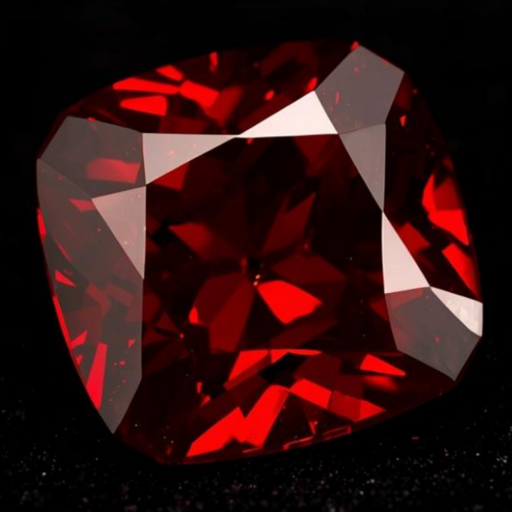
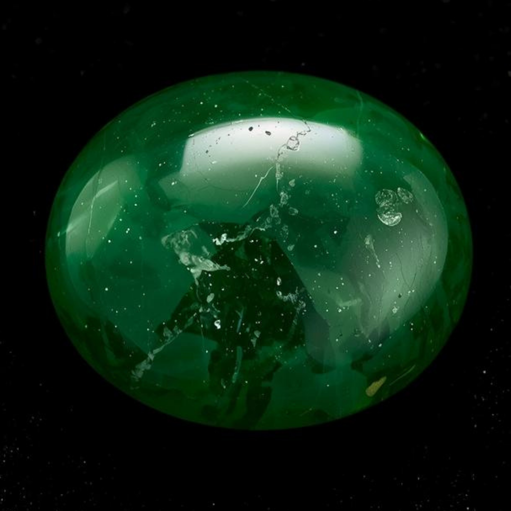
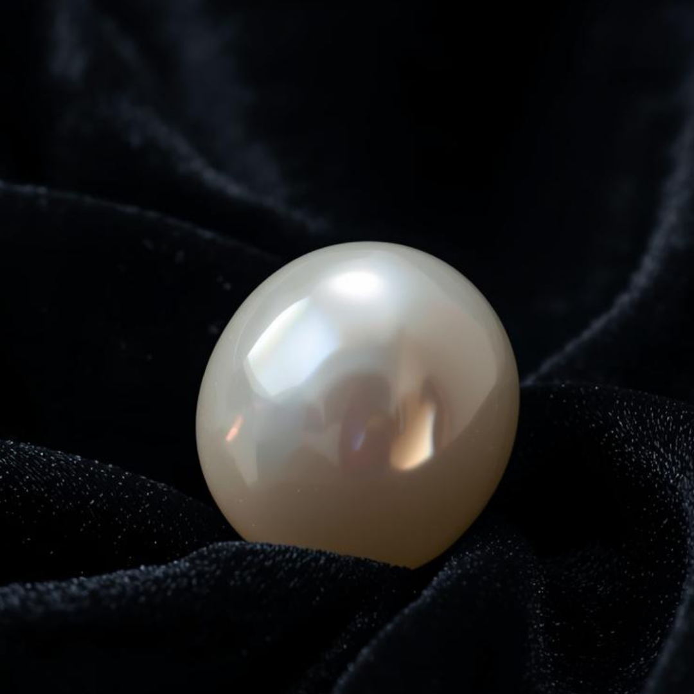
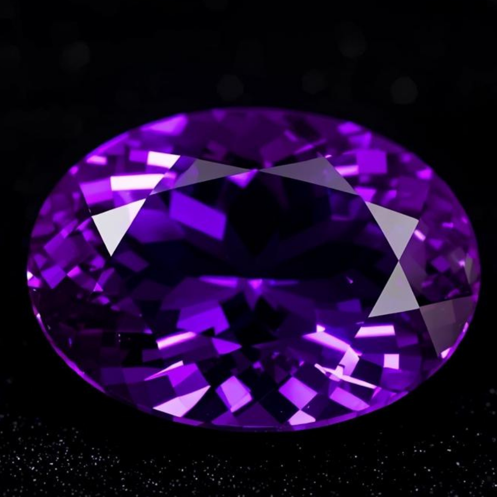
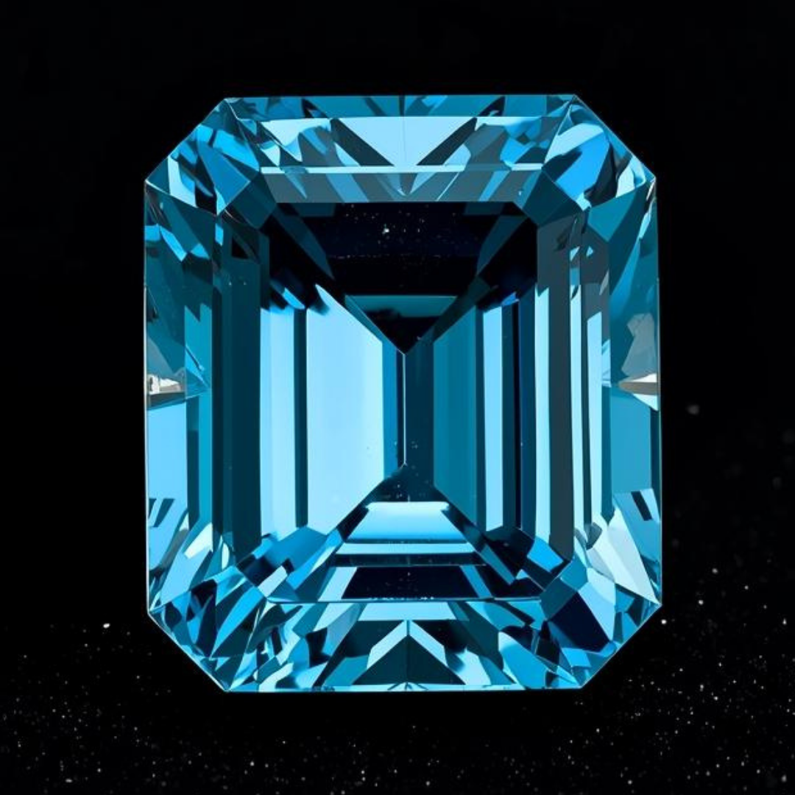
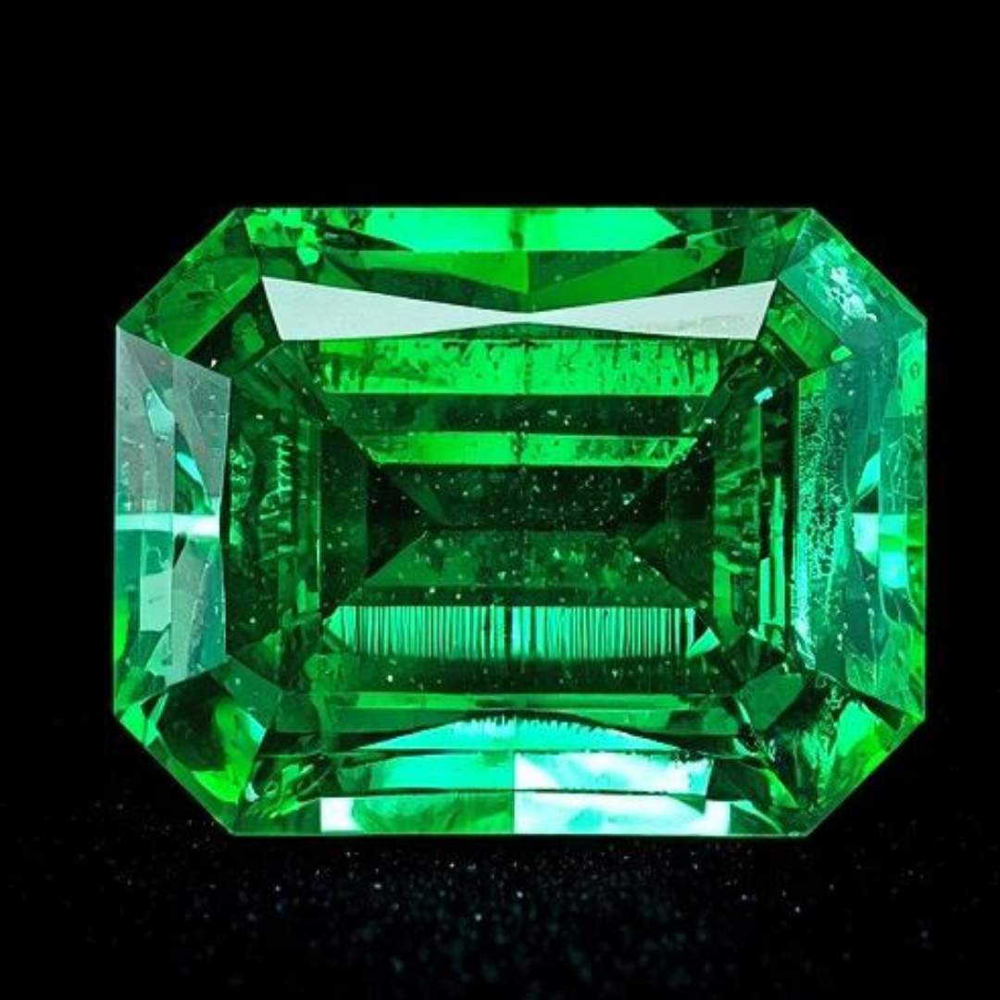
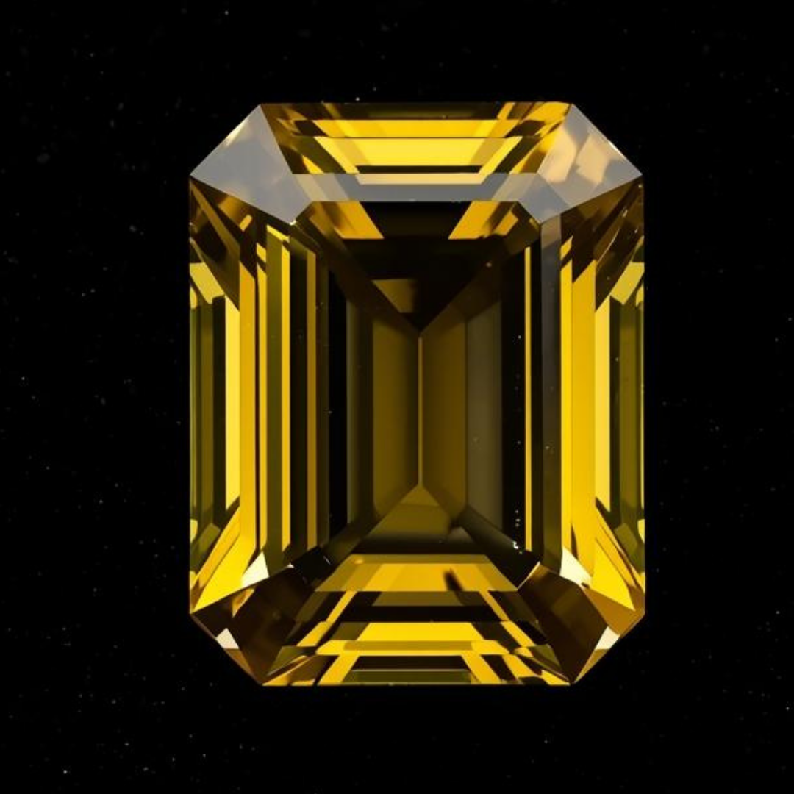
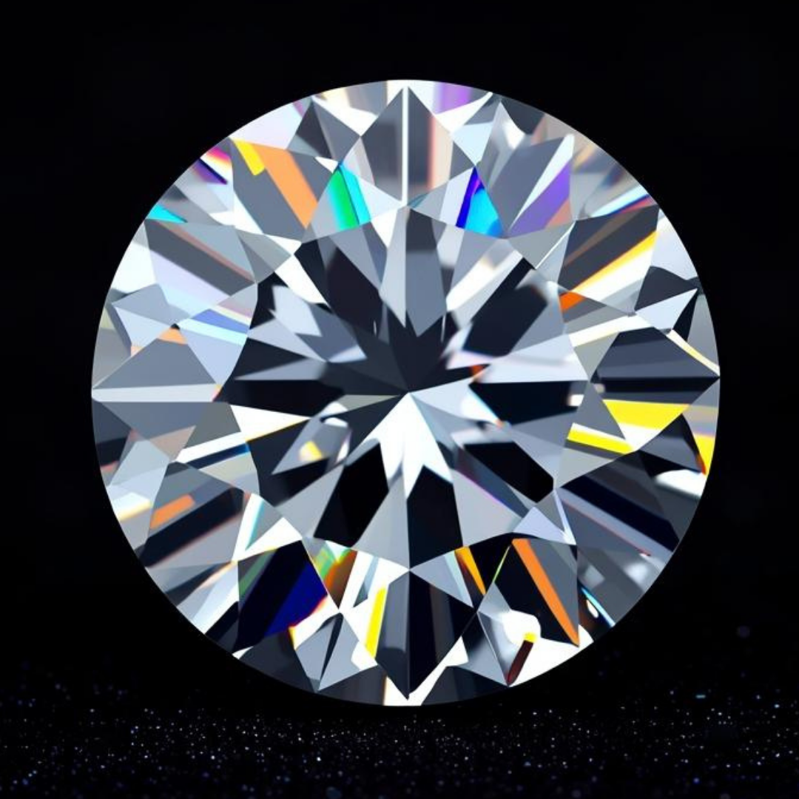

十二生肖守护宝石
十二生肖与幸运宝石紧密相连。寻找你的生肖，了解对应的传统守护石及其功效。

鼠 — 石榴石
年份：1924、1936、1948、1960、1972、1984、1996、2008、2020
勇气 · 稳定 · 成功

牛 — 翡翠
年份：1925、1937、1949、1961、1973、1985、1997、2009、2021
幸运 · 和谐 · 繁荣

虎 — 蓝宝石
年份：1926、1938、1950、1962、1974、1986、1998、2010、2022
财富 · 守护 · 清明

兔 — 珍珠
年份：1927、1939、1951、1963、1975、1987、1999、2011、2023
优雅 · 守护 · 平衡

龙 — 紫水晶
年份：1928、1940、1952、1964、1976、1988、2000、2012、2024
安宁 · 专注 · 智慧

蛇 — 欧泊
年份：1929、1941、1953、1965、1977、1989、2001、2013、2025
智慧 · 守护 · 魅力

马 — 黄玉
年份：1930、1942、1954、1966、1978、1990、2002、2014、2026
富足 · 专注 · 创意

羊 — 祖母绿
年份：1931、1943、1955、1967、1979、1991、2003、2015、2027
繁荣 · 安宁 · 健康

猴 — 绿松石
年份：1932、1944、1956、1968、1980、1992、2004、2016、2028
乐观 · 守护 · 创意

鸡 — 黄水晶
年份：1933、1945、1957、1969、1981、1993、2005、2017、2029
富足 · 自信 · 喜悦

狗 — 钻石
年份：1934、1946、1958、1970、1982、1994、2006、2018、2030
自信 · 清明 · 守护

猪 — 月光石
年份：1935、1947、1959、1971、1983、1995、2007、2019、2031
财富 · 安宁 · 直觉